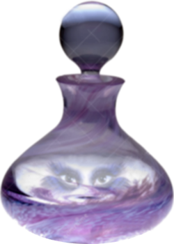

Nos plus puissants alliés comme nos pires ennemis sont en nous.
Il faut du courage pour aller
chercher les premiers et confronter les seconds. C'est pourquoi nous attendons souvent de ne plus
avoir le choix. Pendant ce temps nous laissons la souffrance transformer nos alliés en ennemis.
En étant suffisamment à l'écoute de notre inconscient, nous pouvons entendre quand l'un de nos
puissants alliés intérieurs est en souffrance dès ses premiers appels à l'aide.
Mais parfois ces premiers appels sont venus alors que nous étions encore trop petits pour les comprendre.
Parfois nous ne nous sommes pas sentis concernés et n'avons pas su que nous étions bien LA personne à
qui ils s'adressaient.
Mais quand nous faisons trop longtemps la sourde oreille, ce qui en nous souffre se met en colère.
Nous souffrons de plus en plus, nos relations se dégradent de plus en plus, notre corps est de plus
en plus malade. Nos alliés intérieurs nous font de plus en plus peur et nous les prenons pour des
ennemis en oubliant le début de l'histoire...

Un Esprit avait été enfermé dans une bouteille (ou dans une lampe si le conte est oriental et alors
on l'appelle un "génie") par un événement qui relève de l'histoire d'avant cette histoire
(histoire de parents, d'ancêtres, de pays, de cultures...).
Un jour, passant par là pour chercher du bois, notre héros (vous ?), un bûcheron
plein de rêves mais bien trop pauvre pour les réaliser, voit la bouteille et l'ouvre.
Alors un formidable Esprit s'en échappe et annonce qu'il va tuer celui qui vient de le libérer.
(Voilà donc notre pire ennemi. Vaudrait-il donc mieux le laisser enfermé et passer son chemin ?)
Notre bûcheron comprend qu'il a affaire à un être tout à fait extraordinaire mais ne cède pas à sa peur
(vous êtes prévenu(e), il faut du courage). Il réfléchit et l'idée lui vient de le mettre
au défi de rentrer à nouveau dans la bouteille pour prouver qu'il est bien aussi puissant qu'il le prétend.
Ce que fait le génie (et oui, il faut parfois ruser avec l'inconscient, se donner un peu de temps et de
recul). Ils peuvent alors parler à travers la paroi de la bouteille (le cadre des séances de thérapie).
La négociation débouche sur un accord : l'Esprit s'engage à ne faire aucun mal au bûcheron,
le bûcheron s'engage à libérer l'Esprit (nous pouvons négocier avec les forces hostiles de notre psyché)
. Le génie promet. Le bûcheron le libère.
Ils peuvent maintenant parler en bonne intelligence et l'Esprit confie que lorsqu'il avait été enfermé dans
la bouteille, il avait d'abord imaginé toutes les façons dont il récompenserait son sauveur, mais
les siècles passant, son désarroi, son aigreur puis sa colère transformèrent sa générosité en rage meurtrière.
Voilà comment, de bienfaiteur il était devenu ennemi mortel.
Voilà ensuite comment d'ennemi redoutable, grâce à la perspicacité du bûcheron, l'Esprit redevient un allié
extrêmement précieux.
L'Esprit libéré mettra ses immenses pouvoirs au service de celui qui l'a sauvé et l'aidera à se réaliser et à
devenir prospère. (les puissances enfermées en nous sont capables de telles choses)
La souffrance que notre histoire, que nous-même, imposons à nos alliés inconscients peut les
transformer en ennemis si nous faisons trop longtemps la sourde oreille.
Il est de notre responsabilité de les libérer et de nous enrichir de leur pouvoirs en échange de cette
liberté.
Cette libération se fait d'abord sous condition, c'est-à-dire dans le cadre d'une analyse et avec l'aide d'un
allié extérieur, l'analyste. Puis progressivement s'acquiert la capacité de dialoguer et d'interagir avec l'inconscient, en toute
autonomie, en bonne intelligence et en bonne compagnie, pour le plus grand bénéfice de notre psyché et de notre
être entier.